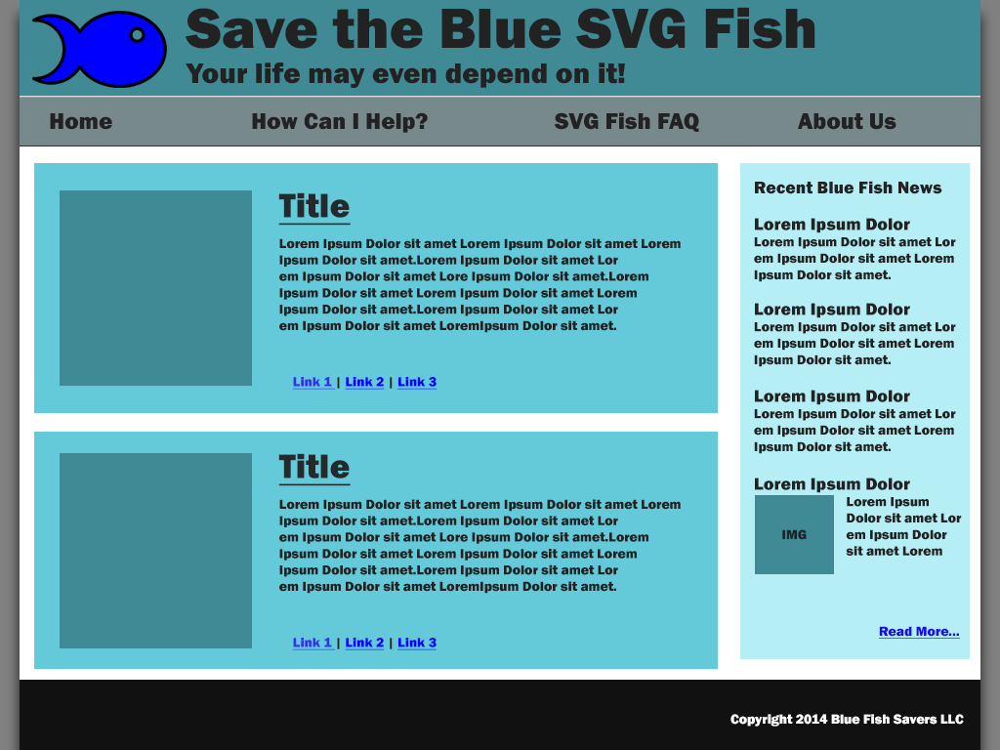
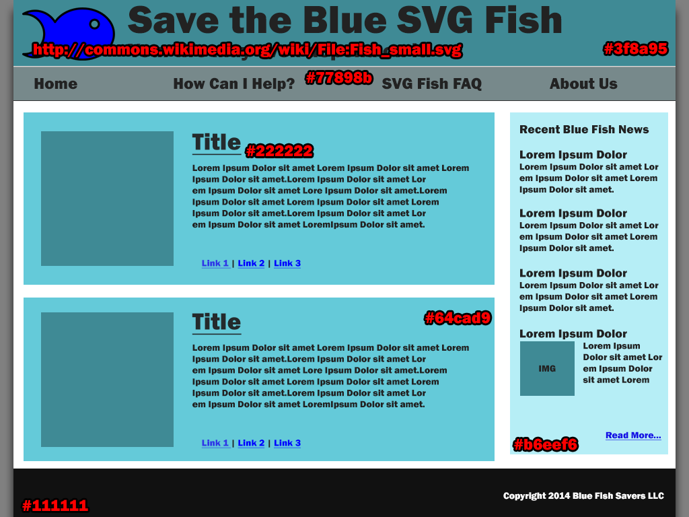

Firstly, what are your class needs? How much time are your students going to want to present? A half hour? An hour? The whole two hours? Do you want to give your students a sign up sheet in order to choose a time block, or assign the students blocks yourself? These are the next few details to be finalized in order to create a schedule, as it varies class by class.
The next piece of information could go two ways. What is needed is a general title describing what (a) either the class is presenting or (b) what individual students/groups are presenting. This will allow for a general map of topics to be created.
Click Reference
"examples" are your friends.
Click HTML (may need to refresh page after enabling)
Your first two lines of a sass file should be:
@charset "UTF-8";
@import "compass";@include link-colors($normal, $hover, $active, $visited, $focus);@include box-sizing(border-box);@include font-face("Name", font-files("name.ttf", "name.woff"));Buuuuuut....
For "Bullet-Proof" we use Nicole Sullivan's technique
You can also use Zurb's Icon fonts
Create a button with a Star icon to the left of it
<button><i class="fi-star"></i> Star</button>@include opacity(50);Only need this for providing Old IE opacity, if not just use "opacity: .5;"
Opacity affects HEX colors and whatever they contain
rgba(255, 255, 255, 0.5);Give a div #bada55 background color with 70% opacity
background: rgba(186, 218, 85, 0.7);???background: rgba(#bada55, 0.7);

https://github.com/esteinborn/compass-sprites
http://bit.ly/inf-sprite-icons - Download this icon pack
Download this, open in Prepros
Place icons into /images/my-icons/*.png
FastClick.attach(document.body);if (Element.prototype.addEventListener) {
window.addEventListener('load', function() {
FastClick.attach(document.body);
}, false);
}Filter a table of data by its text content
Using a drop down
Using a type input
Make a modal slide down from the top of the page
Send variable back to the main page
Affix a sidebar to the top of the page after it's been scrolled past
With JS
With CSS
├── _config.ymlThis stores all the configuration for Jekyll.
GH Pages is limited to a certain set of attributes in the file
Default
name: Site Name
markdown: redcarpet
pygments: false
# change baseurl to:
# '': for root level domains ie: mycustomdomain.com
# '/projectname': for subdomains ie: user.github.io/projectname
baseurl: '/projectname'
permalink: :title.htmlLayouts Folder
├── _layouts
├── default.html
└── post.htmlBase Setup _layouts folder -> default.html
<!doctype html>
<html lang="en">
<body>
{{ content }}
</body>
</html>It's where the magic happens
└── index.html---
layout: default
title: Page Title
---
<div class="foreground page">
<h2>Page Content</h2>
</div><!doctype html>
<html lang="en">
<body>
<div class="foreground page">
<h2>Page Content</h2>
</div>
</body>
</html>_layouts/secondary.html
---
layout: default
title: Page Title
---
<div class="secondary">
{{ content }}
</div>You want to link your header image to your site root
<a href="/">My Site Root</a>nope...
You'll need to use a template link code
<a href="{{ site.baseurl }}">My Site Root</a>index.html & aboutus.html
<a href="index.html">My Site Root</a>><a href="aboutus.html">About Us</a>>Use _includes !!
├── _includes
├── navigation.html
└── footer.html
<!doctype html>
<html lang="en">
<body class="one">
{% include navigation.html %}
{{ content }}
{% include footer.html %}
</body>
</html><!doctype html>
<html lang="en">
<body class="two">
{% include navigation.html %}
{{ content }}
{% include footer.html %}
</body>
</html>---
layout: default
title: Page Title
---that's not all you can use
---
layout: default
title: Page Title
vendorScripts: ['script1.js', 'script2.js']
customScripts: ['easy-tap.js']
customStyles: ['easy-tap.css']
---{% for styles in page.customStyles %}
<link rel="stylesheet" href="css/{{ styles }}.css">
{% endfor %}{% for scripts in page.vendorScripts %}
<script src="js/{{ styles }}">
{% endfor %}├── _config.yml
├── _includes
| ├── footer.html
| └── navigation.html
├── _layouts
| ├── default.html
| └── secondary.html
├── aboutus.html
└── index.htmlGithub will build the pages for you automatically
Your gh-pages branch will not show you your output code.